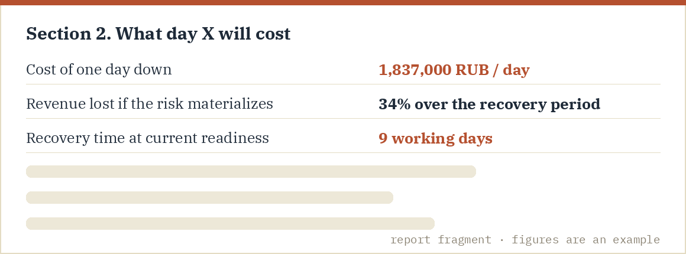
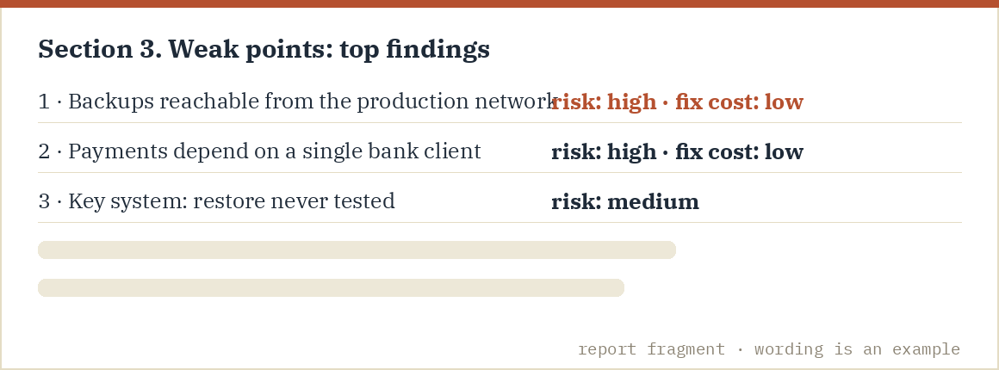
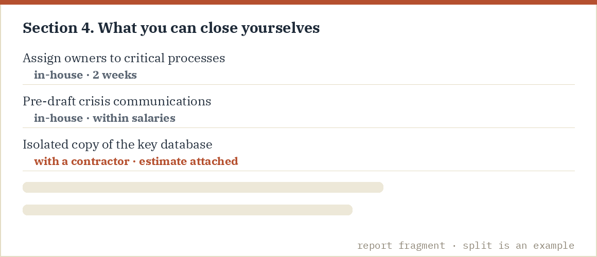
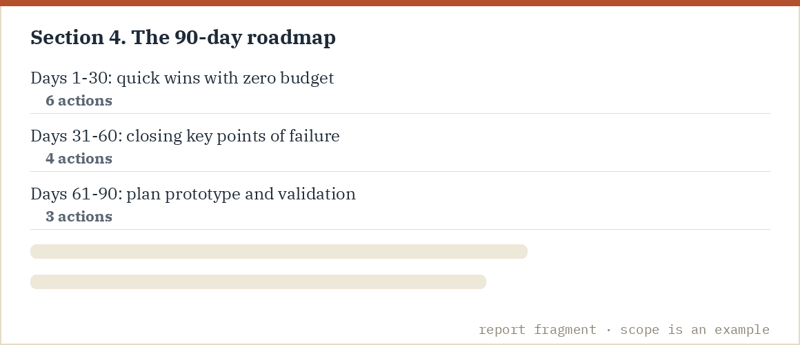

Place in the programme
Turnkey BCM runs in seven steps. The check comes fifth: by then we already know the company's economics, its critical processes and the people who make the money. Now that knowledge is tested against a scenario.
| Step | What happens | How it relates to the check |
|---|---|---|
| 01 | Two scenarios, chosen with you | The scenarios for the check |
| 02-04 | Facts and economics, the business model, interviews with key people | Input data: the cost of a day of downtime, single points of failure |
| 05 | The check: the company lives through day X on paper | Covered on this page |
| 06 | A recovery scheme designed with the team | Built around the gaps found during the check |
| 07 | Survival metrics and their uplift | The check's index becomes the baseline |
If the company already has a continuity system, the programme starts with the check: it shows which steps need completing, and the scope of work is assembled around the findings.
How the 2 days run
Day 1. Diagnostic and economics. A full continuity assessment with key-people interviews — over one hundred questions across six areas: critical processes, IT and data, people, suppliers, plans and financial resilience. In parallel we price the economics: the cost of one day down and the share of revenue you lose if the risk materializes — in money, from your management accounts.
Day 2. The “Day X” stress simulation on the two scenarios chosen at step 01; the main one is a ransomware attack. We take the most revealing scenario of our time — in the morning files will not open, ransom notes are on the screens, ERP and email are down — and work through it in a live dialogue with the CEO and the key team: who notices first, who has the authority to decide, what we tell staff and clients, how and how fast we recover. It is a tabletop exercise — a calm, structured conversation that follows the scenario, with no theatrics and no stopwatches; production systems keep running as usual, and the decisions, authority gaps and open questions it brings up are entirely real.
If ransomware is not your industry's worst nightmare, at step 01 we choose an equivalent scenario as the main one — a site accident, the loss of a key supplier, an IT outage. We still recommend rehearsing on ransomware: it stops every process at once and exposes readiness most honestly.
What the CEO gets
A concrete calculation of what day X costs: the cost of a day of downtime, lost revenue, recovery time in the current state — all in numbers.

A list of the weak points that exist today, sorted by the ratio of risk cost to the cost of fixing.

An “in-house / with a contractor” split: which gaps close through organizational measures within existing salaries — assigning owners, documenting, preparing communications, segregating access rights — and exactly how to do it. In our experience a noticeable share of the findings closes this way, with no extra budget.

A 90-day plan — a short roadmap the team works through on its own.

What happens next
The check report becomes the working brief for the remaining steps of the programme.
- Step 06, recovery. For every gap in the report the team designs an action together with us: who declares the incident, where we switch over, what we tell clients. People execute plans they helped write.
- Step 07, metrics. The resilience index from the check is recorded as the baseline measurement. Everything fixable for free we fix straight away; what needs investment we justify with the damage calculation and leave as a plan.
- Repeat check. Six months later, or after major changes, the same scenario is played again, and the difference between the two indices shows what has actually changed.
- Ongoing monitoring. To keep the index and the cost of downtime visible to management between checks, they are put on the continuity dashboard.
- Training the owner. The person who will run the system after the programme takes the ERGP certification.
Deliverables
- The CEO report (10-15 pages, executive language).
- Damage priced in money: the cost of one day down and the share of revenue at risk.
- A model of how the risk propagates through business processes: what stops, and in what order.
- A single-points-of-failure map — IT, people, suppliers, sites.
- A resilience score: a 0-100 index across six areas (the baseline for future measurements).
- Simulation observations: where decisions stalled, which authorities were undefined, a realistic recovery time estimate.
- A business continuity plan (BCP) prototype tailored to your operations.
- A first-24-hours checklist and pre-drafted crisis communications — for staff, clients and partners.
- A 90-day resilience roadmap with the “in-house / with a contractor” split.
FAQ
Why ransomware? It is the only scenario that stops every process at once and tests IT, people, authority and communications simultaneously. Having rehearsed it, you are ready for most simpler failures.
How many people and how much time does it take on our side? A management team of 6-10 people: day 1 — interviews of 1-1.5 hours each; day 2 — a single 3-4 hour simulation block. Production and operations do not stop.
Can we order the check on its own? The check is part of the Turnkey BCM programme. For a company that already has a system in place, the programme starts with the check, and after it only the steps its findings call for are carried out. Scope and price are calculated for that task.
What if our system is already strong? Then the check will confirm it with an index and numbers, and the next step will be ongoing monitoring on the continuity dashboard.
Can it be done remotely? Day 1 (the diagnostic) — yes. Day 2 (the simulation) works better on site: decisions and team dynamics are only visible in person. For distributed companies we run a hybrid format.
The check is part of Turnkey BCM
1-2 months, fixed scope, free fixes included. The plan check, recovery, metrics and a trained system owner stay with the company.